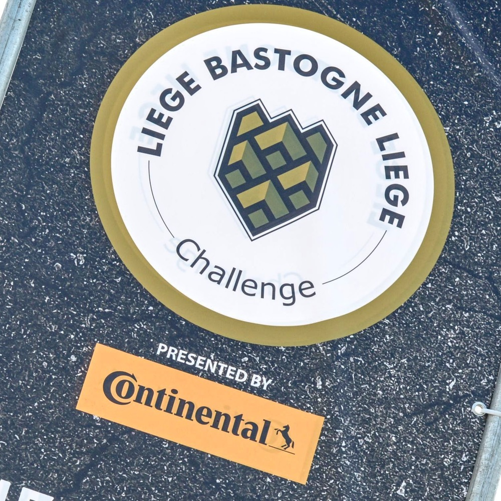
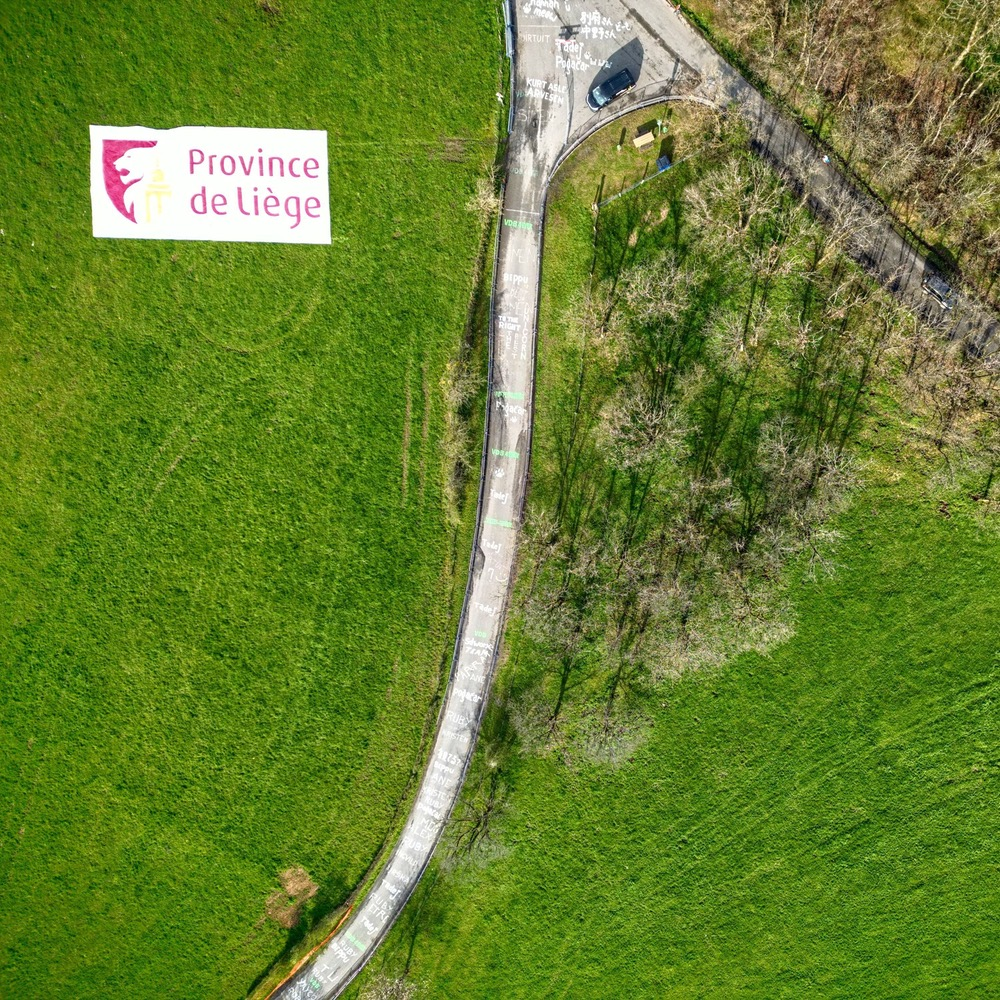
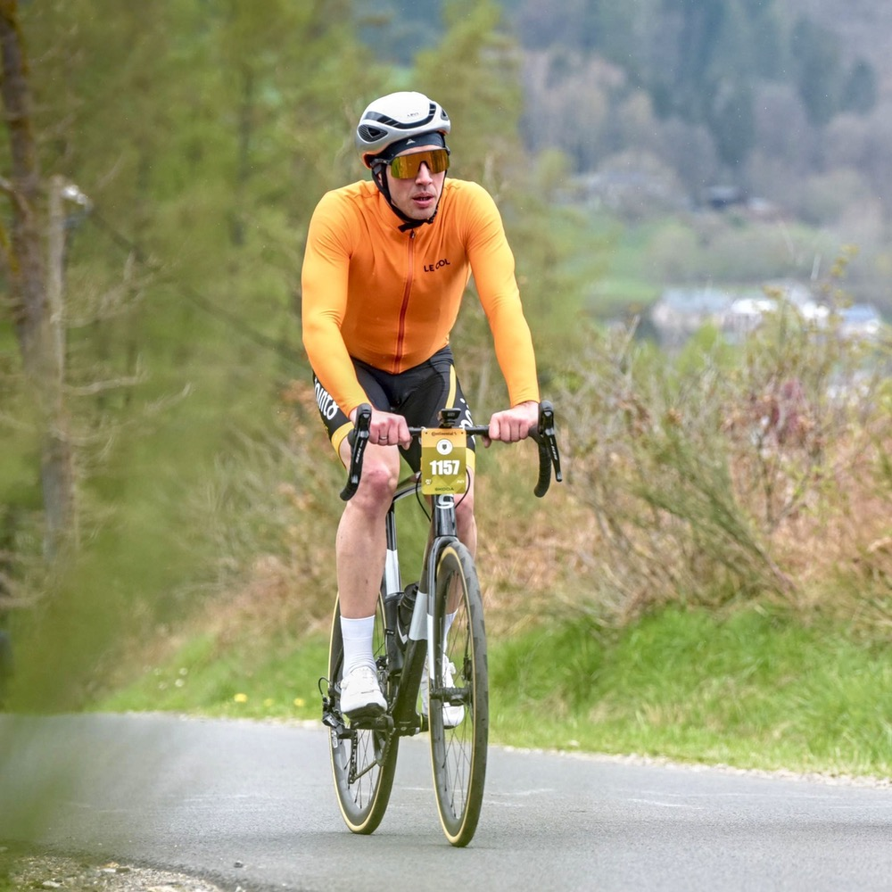
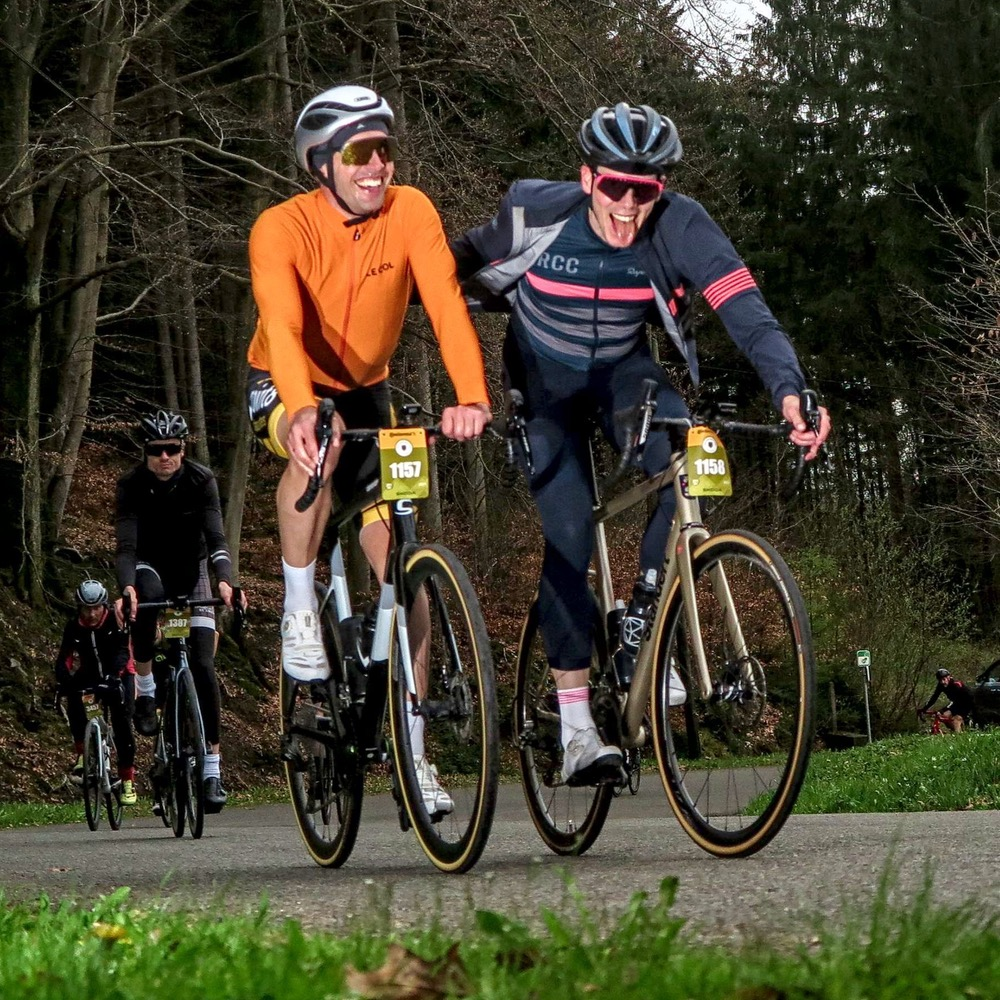
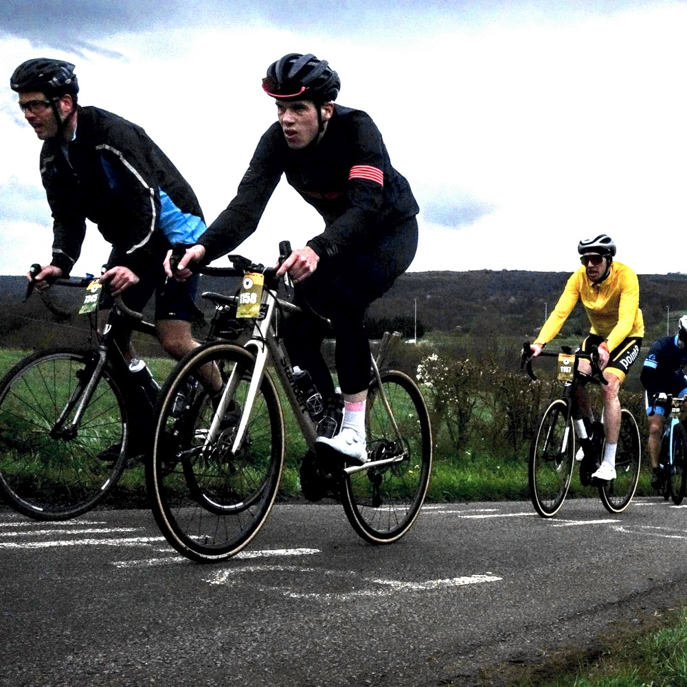
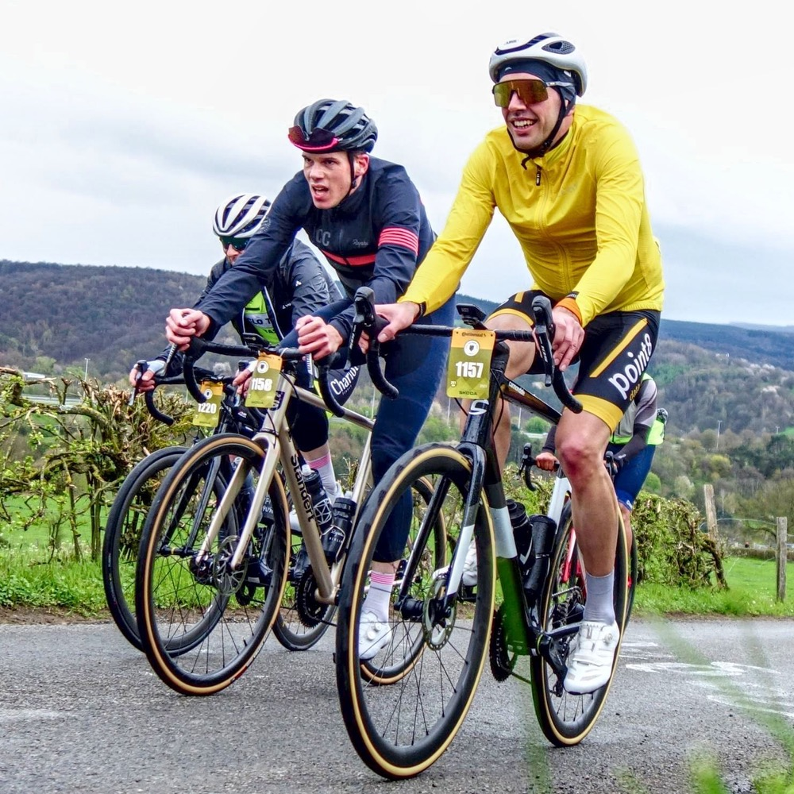
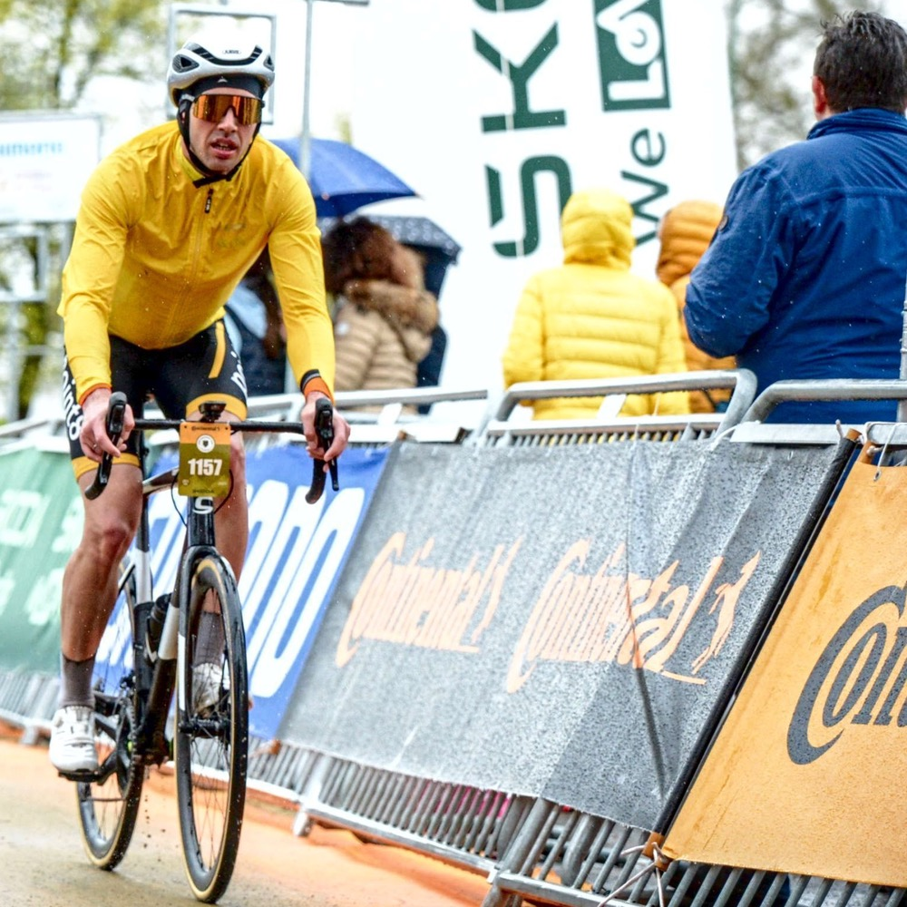

Wir gucken Mal, wie das Wetter ist und dann melden wir uns kurzfristig an. So haben wir es im vergangenen Herbst verabredet. Ich war von Flandern leicht angefixt und dachte mir, jetzt ist auch alles egal. Die Zeichen standen auf Frühling. Sonniges Wetter und bis zu 15°C waren angesagt und eine Unterkunft mit der Familie an der Strecke schon vorher gebucht. Also besorgten wir uns eine Startnummer. Zehn Tage vorher. Bei der Anfahrt wird uns schnell klar: Das ist eine großartige Region zum Radfahren.
LBL Challenge heißt die Fahrt hier. Sie führt auf einem niemals flachen Kurs auf einer 250 km langen Runde traditionell von Lüttich nach Bastogne und wieder zurück. Die richtig harten Côtes und damit ca. 2/3 der insgesamt viereinhalbtausend Höhenmeter erwarten uns auf der zweiten Streckenhälfte. Unsere Veranstaltung startet etwas abseits von Lüttich. Eine gute Idee für eine entspanntere Logistik.
Nachdem wir auf der Ronde das wahrscheinlich schlechtest mögliche Wetter erwischt haben – immerhin hat es nicht geschneit – ist die Vorhersage für LBL angemessen. Südwestwind soll es geben, stark auffrischend zum Nachmittag. Gut, dass wir morgens schon nach Süden fahren. In einer relativ unspektakulären ersten Hälfte erreichen wir Bastogne mit einem Stundenmittel von fast 30 km/h. Damit hatte ich gar nicht gerechnet. Dort finden wir auch die zweite sehr gute Verpflegungsstation. Es gibt Brötchen und natürlich belgische Waffeln. Nun beginnt der Tag richtig. Es woird warm in der Frühlingssonne.
 Nahmen wir uns am Anfang noch vor, schneller zu sein als die Fahrer der ersten Austragung (25 km/h inkl. Pausen), fiel uns recht schnell auf, dass die Verpflegungsstationen nicht darauf ausgelegt waren, die Pausen kurz zu halten. So versuchen wir einfach sauber und sicher durch den Tag zu kommen. Dabei hat mir Stefan dann seine Rage-Attacks beigebracht. Wenn jemand vor uns durch schlechtes Bike Handling auffällt, ganz einfach kurz 6-7 W/kg im Anstieg raushauen und den Tag genießen. Wir fahren an unserer Unterkunft in Vielsalm vorbei und klettern die Côte hinauf an der wir am nächsten Tag die Profis anfeuern wollen. Noch 100 km bis zum Ziel.
 Zugegebenermaßen, ich kannte LBL bisher nicht so richtig. Für micht stand das älteste der Monumente immer im Schatten von Flandern und Roubaix. La Redoute sagte mir erst etwas, als ich mir erklären ließ, dass hier das Rennen gewonnen wird.
Es sieht ein Bisschen aus wie die Alpe in klein. Zig Wohnmobile an dem nicht einmal 3km langen Anstieg. Mit 17% im steilsten Teil hat er es aber in sich und ein gewisser Remco Evenepoel sollte sich das am folgenden Tag zunutze machen. Für uns war das irgendetwas zwischen Spaß und Quälerei.
 Mittlerweile hat es wieder angefangen zu Regnen. Es wäre ja auch zu schön gewesen in diesem Frühjahr irgendwann mal mit einem sauberen Fahrrad und trockenen Klamotten im Ziel anzukommen. Immerhin war es nicht sehr kalt. Wissend, dass nur noch ein bis zwei härtere Anstiege auf uns zukommen, haben wir im steilsten Stück der Redoute noch einmal etwas Spaß gehabt, wie man klar an den Gesichtern erkennen kann.
 Für die Größe des Events und das absehbar wechselhafte Wetter ein unspektakulärer Zielbereich. Es hatte seit fast zwei Stunden geregnet und die abendliche Kälte zieht uns so langsam unter die nasse Jacke. Immerhin steht das Auto diesmal in der Nähe. Wir gönnen uns ein kleines Töpfchen Nudeln und machen uns auf den Weg zurück nach Vielsalm. Dort wartet das italienische Buffet und Lütticher Waffeln auf uns.
Die Strecke von LBL ist einfach wunderschön. Bei entsprechendem Wetter kann diese Veranstaltung aber sicher auch extrem unbequem werden. Die Straßen sind zu großen Teilen gut aber in einigen Bereichen tückisch. Wenn ich Aufwand und Spaß gegeneinander abwäge kann ich mir aber vorstellen, dass LBL ab nun als Event gesetzt ist. Die Kombination aus Strecke, schönen Anstiegen und damit auch eher kleinen als großen Gruppen ist fast perfekt. Die Verpflegung ist gut und – Achtung – abwechlungsreich. Zusätzlich ist die Möglichkeit Unterkünfte sehr dicht an der Strecke zu buchen extrem interessant für ein Wochenende in Belgien.